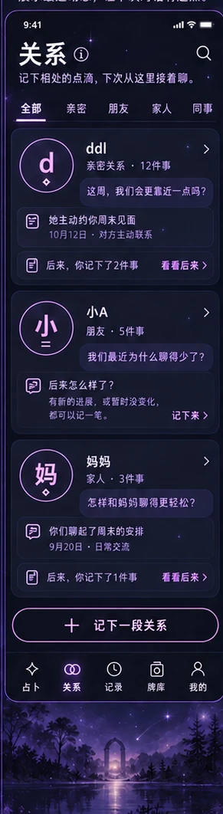
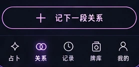
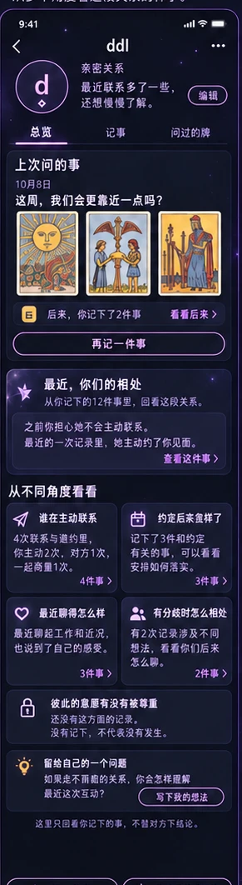
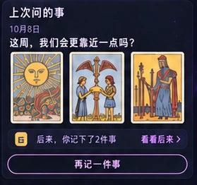
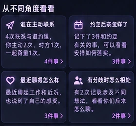
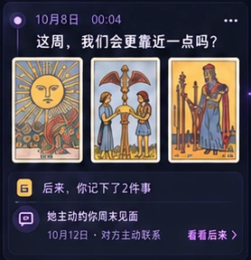
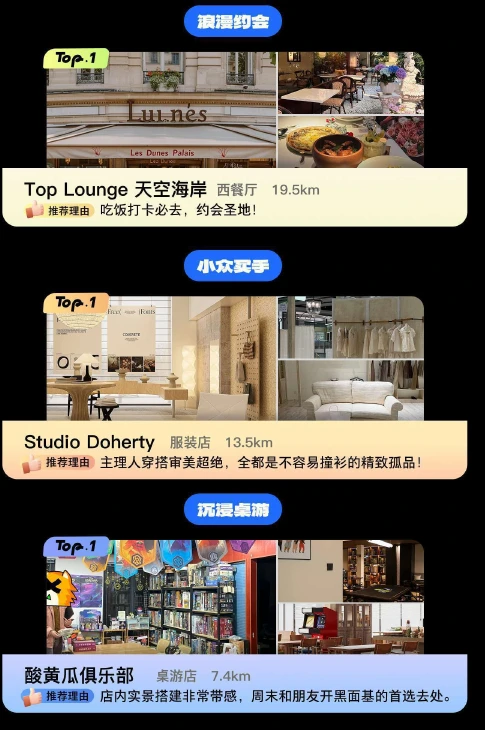
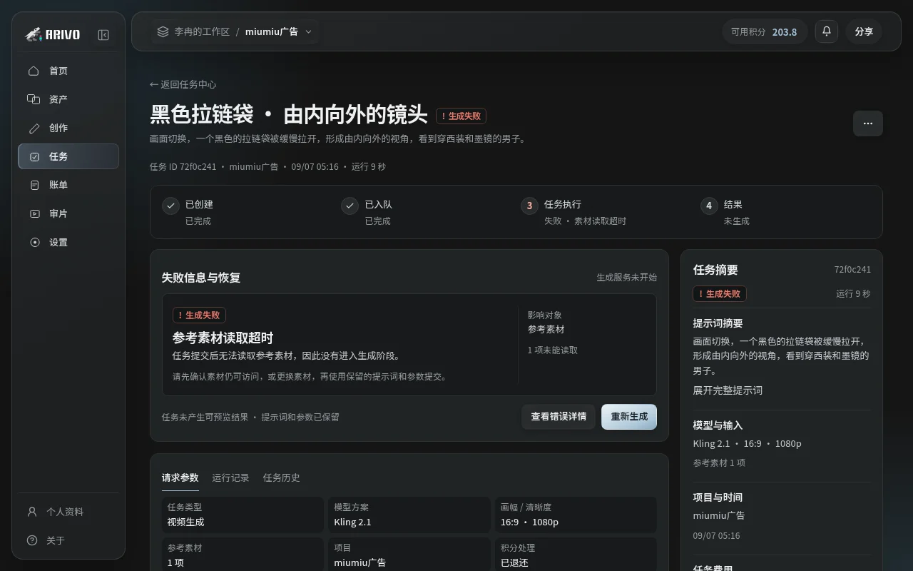

AI 产品能力
- Prompt 工程体系设计
- Schema 结构化输出
- 采样参数策略
- 上下文 / Token 管理
- 幻觉校验
- 评测集搭建
- Agent 流程编排
- 多模态视频 / 图像生成
个人介绍
我从用户的决定出发，把 AI 的能力边界变成产品规则，再用原型和评测检验方案。
AI 产品经理 · AIGC 产品 · 多模态视频生成产品
实现扇面选牌、流式解读与关系管理，并以同题对照检验 AI 回答。
根据问卷、访谈和走查梳理找店断点，用地图与列表联动的四态设计回应定位和比较需求。
把生成状态、失败重试和时间点审片做进浏览器，演示团队交接流程。
项目
AI 解读、地图探索与视频团队协作。
ORAE · 个人项目 · 已上线
为初次抽牌的用户设计网页体验。牌义可以直接查阅，AI 解读把用户的问题和抽到的牌联系起来。


世界逆位提示「事情尚未收尾」。
针对同一个跳槽问题，回答给出「偏‘否’的倾向」。
来源为一次线上走查。读者是否认为 AI 更有帮助，仍需盲评。查看完整对照。
项目分析
个人项目 · 已上线。牌面解读和关系管理均有代码与产品证据，留存和模型质量待实测。
让首次抽牌的用户理解牌义怎样关联当下的问题，也让反复关注同一段关系的人带着已确认的经历回看和追问。
单次解读解决「这张牌和我的问题有什么关系」。连续使用时，用户还要回看同一段关系、补记发生的事并继续思考。重复交代经历是业务痛点，模型把早期推测混成后续事实是 AI 特有风险。
机会假设 · 结构化关系账和明确的记忆确认步骤，能减少重复输入，并降低对错人、把猜测当事实的风险。需要实测触发频率与用户反馈。
已走查线上抽牌流程，并采集一条关于跳槽的真实回答。下表是按公开定位做的桌面参照，提示词、Schema 和独立质检等内部实现需要另行实测。
| 观察维度 | ORAE | Labyrinthos | Day One |
|---|---|---|---|
| 主要任务 | 问题与牌义关联 | 牌义学习与读牌 | 长期日记与历史回看 |
| 连续使用 | 关系账与后续问牌 | 独立走查待补 | 以记事和历史回看为主 |
| 来源与质检 | 用户确认、来源限制与关系隔离 | 待实测 | 待实测 |
产品切入点 · 关系管理把单次解读、用户确认的经历和后续回看放入同一条链路。
产品目标是让用户找到可核实的下一步，并能回来查看同一段关系。范围先覆盖单次解读、记事与当前关系召回。对跨关系串线、过度确定的回答和写入错误设门槛。事件档案与模型窗口分离，近期窗口最多 20 件。
方案有两条使用路径。一条完成当次问牌，另一条让用户围绕同一段关系记事、回看和继续提问。
用户可以输入问题，也可以跳过。系统推荐牌阵，用户从扇面选牌，牌落到对应牌位后才揭晓。「继续」在全部牌落位后出现。
固定牌义可直接回看。AI 结合问题、牌位和正逆位，按牌位逐步输出，再给出总结。解读失败时保留牌面，允许重试。
先选一段关系，再查看它的最近经历、问过的牌与后续记事。这样新问题能接上已确认的背景，用户也可以单独记下真实经历。

找到要记录的关系，再从最近动态接着回看。
先用亲密关系、朋友、家人等分类缩小范围，再浏览对应记录。
把上次的问题和最新记事放进同一张卡片，进入详情前就能想起聊到了哪里。

新建入口放在列表末尾，先让已有关系占据主要浏览空间。

在一个页面接续上次提问，并了解最近相处。

把原问题、牌面和后续记录放在同一卡片，回看时保留当时的语境。

用主动联系、约定和分歧组织记事，便于从不同角度回看同一段关系。
提示哪些线索还没有足够记录，再用反思问题引导用户补充自己的观察。
沿时间回看原问题、当时的牌面和后续经历。
把问牌入口留在当前关系内，新一轮提问沿用已选关系。

历史卡片同时保留原问题、牌阵和后续经历，便于回看这次提问的前因后果。
缺少后续时提供补记入口，让用户在回看这次问牌时补上发生过的事。
人名与记录量为设计示例。细节图截自对应设计稿，点击任意画面可在站内放大。
模型从用户原话提取候选，程序校验证据和来源，用户确认后才可召回。用户可暂停这段关系的写入和召回，或回看并删除记录。
· 北京时间 · 线上快照
数据按原控制台截图录入。「今日」截至截图时间，昨日为完整自然日。当前是只读展示，未接入实时后台。
后台模块与界面以 ORAE 项目仓库的实现为准。查看 GitHub 控制台源码（需仓库访问权限）
MVP 的线上解读可用，关系账与回看有实现。拟用固定牌、牌位、正逆位和问题做五组盲评，并向关系记忆评测集加入跨对象误召回、推断越权、未确认候选等反例。
| 迭代场景 | 改动 / 方案 | 现有证据 | 待补 |
|---|---|---|---|
| 继续按钮边缘无响应 | 启用状态变化时重新挂载点击控件 | Android 模拟器复验，两端一次响应 | 真实使用反馈 |
| 解读流中断 | 显示错误与重试，不保存片段或扣配额 | 上游 502 回归用例 | 线上失败率与耗时 |
| 「偏否」像求职结论 | 拟先提示待核实条件，再给反思问题 | 一次线上同题摘录 | 改写后盲评 |
排查链路保留了 Session、readingId、requestId 和模型错误类别。实际线上日志样本待补。
线上「偏否」容易压过牌义的不确定性。下轮把「是否回答得贴合」与「是否把推测写成结论」分开标注。关系样例则对比开关授权和一段历史被更正后的结果。长期可引入经审阅的检索知识库与用户自定义示例，先做可追溯评测再扩大召回。
交互展示
左右滑动扇面，中间的牌会抬起。松手后，牌会停在正中的候选位置。
选一张牌，翻开后读一段示例解读。此试玩使用本地牌面与示例文本。
选择一张牌开始。
留给自己的问题
牌面从原位抬起放大，收起时沿原路回到牌位。
打开 ORAE 完整版，可体验洗牌、切牌、多牌位与流式解读。下面是线上版本的三个关键帧。
早期方案用牌轮浏览，现版用底部扇形手牌承接滑动、点按和上甩。上方保留目标牌位，让牌的去向清楚可见。底部预留操作区，避免翻牌途中发生布局位移。查看早期牌轮画面。
待选 → 已选 → 飞行与翻面 → 落位揭晓 → 继续。实现分别记录已抽出、飞行中和已落位的牌。选牌时测量目标牌位，飞行中拦截再次选牌，保留 350 毫秒的点击间隔。全部落位后才显示「继续」。牌详情从原位放大，关闭时回到原位。
390px Chromium 已走通至流式解读，1440px 桌面首页保持单列居中。窄屏的三个实拍关键帧见成品预览。站内试玩可用键盘抽牌，并适配系统的减少动态效果设置。ORAE 完整版的键盘抽牌路径和减少动效适配仍待验证。
Android 用户反馈「继续要点好几次」。复现时文字能响应，胶囊边缘仍处于禁用态。修复在启用状态变化时重新挂载原生点击控件。提交记录显示，模拟器中点两端都可一次响应，QA 清单也补上了边缘点按。
高德地图 · 体验设计与原型
围绕周末探店和差旅找店，把内容推荐、地图位置和商家信息接到同一条决策路径。
高探索、高审美。为推荐内容增加主题与氛围，让用户从图片和场景中发现想去的地点。
高效率、高掌控。在地图与列表中前置距离、位置和评分，帮助用户快速比较。
偏好安静浏览。设计上可优先提供可信的评价入口，再用原型验证此类用户的实际选择。
关注口碑与决策掌控。设计上可保留商家详情和筛选入口，让用户自己核对口碑与条件。
点击分群查看设计启示。比例沿用原稿四舍五入口径，分组样本用于研究分析。查看调研原稿。
项目分析
体验设计项目 · 研究与原型已完成。AI 辅助筛选为扩展方案，当前证据来自原稿。
让周末探店者和差旅用户在地图中完成发现、定位和比较，减少跨 App 核对。
现有链路中，内容负责种草，地图负责定位，另一些页面负责核对营业和口碑。访谈与走查发现同类推荐堆叠、详情难扫读，以及收藏点和行程的关系不清。拟加入 AI 时，额外风险是把营业时间、距离或评价编成确定理由。核心任务收敛为在陌生地点附近选到符合条件的一餐。
研究包含问卷、访谈、体验走查与竞品整理。问卷表明偏探索与偏效率的用户对信息密度的要求不同。
| 对比维度 | 高德方案 | 百度地图 | 美团 / 大众点评 | 抖音 / 小红书 |
|---|---|---|---|---|
| 核心任务 | 附近发现、定位与比较 | 地点搜索和导航 | 消费决策与交易 | 内容发现与种草 |
| 主要呈现 | 地图与列表四态原型 | 标准化地点列表 | 榜单、评价与商家卡 | 短视频和图文内容 |
| 改造机会 | 把距离、位置与详情放在同一路径 | 地图探索体验可参考 | 比较与商家详情可参考 | 内容呈现与探索氛围可参考 |
查看问卷原稿。原稿比较的是体验链路，AI 内部技术能力尚未实测。
目标是在同一地图体验内完成筛选和决策。明确条件用规则；输入为自然语言且含多项偏好时，才探索 AI 拆解意图。地点信息来自可追溯字段，缺失营业状态须标明待确认；限制候选数量与调用成本。
方案沿着「推荐发现 → 附近定位 → 商家决策」展开。点击任一设计图可放大查看。
用场景卡帮助还没有明确目标的用户开始浏览，再通过带地点信息的内容卡把兴趣接到找店动作上。
左右滑动，或点一张卡片让它居中。
左右滑动查看不同主题的推荐地点。
用分类带用户进入合适的商圈或品类，再用距离、评分与图文摘要缩小候选。全屏读列表，半屏对照位置，全图看分布，点选后聚焦单店。
美食
旅行
酒店
生活服务
休闲娱乐
出行
前置商家名、距离和口碑，减少进入详情前的来回确认。
先给出地点判断所需的基本信息，再把优惠、菜品、笔记和评价分开，便于按需查看。
用户表达多项条件时，拟用模型提取可编辑偏好，再按真实地点字段筛选并解释推荐理由。
| 路径 | 适用场景 | 取舍 |
|---|---|---|
| 规则筛选 | 目标明确，按距离、类别和营业筛选 | 可控且便宜。作为原型主路径及异常回退。 |
| AI 解释 | 条件较多或说法模糊 | 拟只将候选 ID、字段出处和理由交给输出层。字段缺失走列表，模型参数和评测待验证。 |
现有方案以推荐、附近、详情三个原型模块交付。下一步用同一组地点和需求先测四态联动，再对照加入 AI 解释。标注地点硬条件，自动核验地点 ID 和引用字段，人工检查理由。
| 设计场景 | 方案 | 现有证据 | 待补 |
|---|---|---|---|
| 跨界面核对地点 | 点位与列表卡片双向关联 | 四态高保真 | 后测返回次数和定位错误 |
| 详情决策信息分散 | 重组距离、评分、状态及详情 | 262 人问卷分群与原型设计 | 前后任务完成率与耗时 |
| 自然语言条件较多 | 拟在规则筛选上补候选解释 | 方案构想 | 事实准确率与调用成本 |
最关键的早期问题是信息密度与空间定位互相干扰。改用可切换的地图与列表面板后，先验收不同状态是否保留正确选中项。如果只能推进一项，先测规则版任务完成率，再判断 AI 解释能否减少筛选步骤。对营业信息过期与误筛须分开记为 Bad Case。
交互展示
在手机界面内切换推荐与附近、拖动列表顶部，或点选图钉和商家卡片。点「肉本家」还能继续查看详情。

网页交互原型 · 使用原稿界面素材和示意点位
列表和地图同时可见。点击图钉或商家卡片，可以聚焦对应地点。
所有商家示例用于演示联动。地图为静态底图，未接入定位、路线或实时商家数据。
试着把列表向下拖到全图，点一个图钉进入单点，再从商家卡片查看详情。想从内容开始，可以先点「推荐」。
全屏突出连续浏览，半屏把图钉和卡片放在同一视野，全图留出探索范围。选中单个位置后，聚焦卡只展示当前商家。各模块的原稿截图可在方案设计中分别查看。
设计交付可以用两项状态描述：面板高度和当前选中的地点。拖动面板调整可见地图范围；点卡片或图钉共享同一个选中地点；清除选择后回到地图浏览。上方的网页原型实现了四态、选中态与详情跳转，线上实现证据待补。
原型采用手机竖屏。半屏要同时显示地图与可扫读的距离、评分；全图将列表折叠到底部，避免遮挡主要点位。设备实测、长列表与屏幕阅读器验证待补。
走查发现列表与地图分离时，读者需要反复对应地点。四态方案把点位与列表卡片关联。下一轮可用「找酒店附近的一家晚餐」对比原流程与新原型，记录返回次数和定位错误，复验数据待补。
Arivo · 视频团队工具 · 本地数据演示
创作者提交生成任务，编辑接手结果，审阅人用时间点标注意见。失败任务保留参数，可从详情重新提交。

参考素材读取超时，任务未生成结果。
保留提示词和参数，以原参数创建新任务。
来源为演示任务 72f0c241。真实模型质量与团队使用效果待验证。打开失败任务。
项目分析
React / Vite 交互演示 · 生成状态使用本地模拟数据。真实模型、独立质检和团队试点仍待接入。
给视频制作团队一个可追踪的生成与审片空间，让创作者、编辑和审阅人沿同一任务和版本交接。
角色包括提交镜头的创作者、接收版本的编辑和留时间点意见的审阅人。手工交接容易缺提示词、参考和失败原因。接入模型后，还会出现上下文超限、镜头偏离要求、字段不齐和「生成完成但结果不可用」。MVP 聚焦一次失败恢复再交接审片。团队访谈和频率待采集。
公开能力用于界定产品边界。提示词控制、严格 Schema、幻觉处置和独立质检链路需按实际入口测评。
| 观察维度 | Arivo | Runway | Frame.io |
|---|---|---|---|
| 核心任务 | 生成任务与版本交接 | 多模态生成 | 媒体审阅与协作 |
| 失败恢复 | 演示保留参数，可重新提交 | 待实测 | 待实测 |
| 时间点与版本 | 演示绑定意见到时间点和版本 | 待实测 | 时间点评论和版本协作 |
| 模型与内容质检 | 本地模拟，真实模型与质检待接入 | 待专项评测 | 待专项评测 |
差异化假设是让失败原因、生成参数与审核版本在交接时保持可追溯。
用户目标是不用重填即可恢复失败任务，让审阅人打开正确版本。拟接入时限制镜头时长、素材尺寸与上下文；长视频先切镜头。广告脚本只可引用已核实卖点，未知卖点交给人确认。限制重试与校验开销。
| 策略 | 方案 | 状态 |
|---|---|---|
| Brief 与 Token | 保留目标、已核实卖点、素材 ID 和最近修改，使用历史摘要替代全量对话。摘要可能丢细节，支持回原记录核对。 | 拟验证 |
| Prompt 与采样 | 系统指令、按镜头类型组织 Few-shot。拟比较合规低随机模式和创意模式，逐模型检查 temperature / top_p 的支持。 | 拟验证 |
| Schema 与独立质检 | 程序校验必填项、时长和素材引用。任务执行与内容质检各有状态，质检拒绝时保留原因并交给用户处理。 | 拟验证 |
| 功能与信息架构 | 生成面板、任务中心、资产与审片。详情展示运行记录、请求参数和恢复入口。 | 浏览器演示 |
以下为目标数据结构示例，当前仓库的模拟任务仍按原有字段运行。
{
"taskStatus": "completed",
"qualityStatus": "needs_review",
"shots": [
{
"durationSec": 6,
"visualBrief": "沿桌边推进至产品特写",
"referenceIds": [
"asset_demo_01"
]
}
],
"warnings": [
"卖点引用待人工确认"
]
}现有演示可从提交到排队、失败详情和参数重试，再切到版本审片。真实模型接入后先做可恢复任务 MVP，再加入带来源的脚本 Schema 和独立内容质检。
| 迭代场景 | 方案 | 现有证据 | 待补 |
|---|---|---|---|
| 素材读取超时 | 展示失败原因，以原参数重新提交 | 模拟任务 72f0c241 | 恢复成功率、重复填参和耗时 |
| 版本意见难定位 | 意见关联版本及时间点 | 审片演示 | 版本匹配和用户反馈 |
| 生成完成但内容不可用 | 拟拆分执行状态和独立质检 | 使用本地模拟 | 模型盲评与字段自动校验 |
体验失败任务。目前没有真实生成结果或团队使用指标。
任务失败样例说明「超时」需要定位到读取素材还是执行模型。项目接入后，先用任务 ID 对齐素材状态、Session 与运行日志。协作侧重点评估意见是否绑定正确版本。后续可实验可审查的知识库和 Few-shot 模板，失败样本先人工标注再进入新的评测集。
交互展示
选择步骤，查看本地模拟演示中的状态与后续操作。
任务详情显示素材读取超时，执行阶段尚未开始。
沿用提示词与生成参数
保留原提示词和参数，提交后创建一条新任务。

切换到已有可审版本，在时间轴上定位意见。
React 与 Vite 演示可从生成面板提交任务，到任务中心看状态，再到审片中心查看意见和版本。数据保存在当前浏览器。
视觉规范以石墨黑和银蓝为主，主操作和焦点使用银蓝，状态保留文字。任务列表负责扫读，详情展开时间线与恢复操作。审片在时间轴标出评论，并支持小组成员只读视图。查看视觉与动效规范。
提交 → 待处理 → 运行中 → 已完成。新任务使用独立 ID，保存提示词、参数和项目，浏览器计时推进演示状态。失败详情用原参数创建一次新任务。审片评论记录时间，点评论可定位到相应时刻。查看任务状态源码。
样式设有手机断点，窄屏收窄侧栏并让待处理区域单列。控件有键盘焦点样式，动效样式读取系统减少动态效果设置。刷新可恢复当前浏览器已保存的演示状态。完整键盘画布和真机走查记录待补。
仓库迭代记录显示，生成进度已按任务状态调整配色，输入框与选择菜单也统一了焦点和禁用样式。原型可复现素材读取超时、确认错误及保留参数重试。正式复验可检查窄屏下的错误提示可见性、重试是否保留输入，以及键盘能否到达恢复操作。用户复验记录待补。
审阅人给出带时间点的意见，编辑需要拿到对应版本的待改清单。首版从有版本、时间点和处理状态的评论开始，输出保留原文与行号的 CSV。
| 对齐项 | 交付约定 |
|---|---|
| 数据契约 | 版本和时间缺失时进入待核对。重复行不参与导出，已处理意见只回看。保留原评论。 |
| 人机边界 | 规则解析可核实字段。自由文本可先用下方模板整理，之后进入同一校验和人工确认流程。 |
| 验收口径 | 有效待确认能整理，缺项可定位到行，未确认不导出。耗时对照用同一输入，自动侧计入人工复核。 |
| 发布范围 | 作品集内的浏览器工具。真实团队试点和 Arivo 产品内集成是后续验证项。 |
你是审片助理。把下面的意见整理成可校验的候选行。
输入：视频版本、时间点、来源状态、意见原文。
输出：每行 v版本 | MM:SS | 待确认/待修改/已处理 | 意见原文。
规则：只用输入里明示的字段。保留原文，不合并跨版本意见。
缺少版本、时间或来源状态时，保留缺项，交给程序拦截和人工核对。
发给编辑之前须经过程序校验和逐条人工确认。
审片意见：{{粘贴本次意见}}预置三条来自 Arivo 演示站版本对比页的原始意见，含两条已处理旧版意见和一条待确认当前版意见。输入与计时在当前浏览器页面处理。查看演示来源
v3 | 00:08 | 已处理 | 转场略快，建议多留半秒。 v3 | 00:19 | 已处理 | 片尾字幕安全区需调整。 v4 | 00:12 | 待确认 | 检查人物动作与字幕是否同步。手工侧从开始整理到复核结束，自动侧从点击整理到确认并导出。用同一输入各做至少三轮，交替先后顺序。这里的历史只记录当前页面实际采集的配对耗时。
固定为上方 3 条源数据。开发机 Node v24.22.1 预热后每轮重复 1,000 次，表中是已确认输入的解析与生成 CSV 文本的单次平均耗时。浏览器渲染、下载和人工确认不计入，耗时差须以端到端配对试用为准。
| 轮次 | 程序处理 | 手工整理与复核 | 自动整理与复核 |
|---|---|---|---|
| 第 1 轮 | 0.0051 ms / 次 | 待采集 | 待采集 |
| 第 2 轮 | 0.0060 ms / 次 | 待采集 | 待采集 |
| 第 3 轮 | 0.0060 ms / 次 | 待采集 | 待采集 |
用两篇示例资料验证「先按角色过滤，再检索并给出来源」的交互。试搜 v4，切换访客和项目成员。角色切换与资料为前端模拟，真实权限需在服务端执行。
| 场景 | 实际检查 | 范围 |
|---|---|---|
| Arivo 原始示例 | 识别 3 条有效记录，过滤 2 条已处理记录，仅在确认后导出剩下 1 条。 | 程序样例验收 |
| 异常与安全导出 | 缺版本与非法时间可定位原文行，重复双方均隔离，未确认项不导出，防止评论被表格软件当公式执行。 | 程序样例验收 |
| 引用与模拟角色 | 同一关键词 v4，访客无匹配，项目成员能得到一条带引用结果。 | 本地示例资料 |
| 使用结果 | 页面可记录手工与自动加复核耗时。本人多轮基线、真实团队采用情况待采集。 | 指标未出 |
Token 预算要留给系统指令、当轮输入和输出。Brief 保留不能丢的约束，摘要承接历史。采样参数按模型能力和任务风险调整，以盲评核对质量。
传统规则负责硬约束和确定性校验，模型负责解释语境或生成候选。Schema 能检查类型与必填字段，内容事实还要查证据。
将流式中断、输出不合规、无证据推断分开标注。用固定输入做前后对照，保留来源、错误类别和人工判断，逐轮复评。
简历与联系链接待补充。